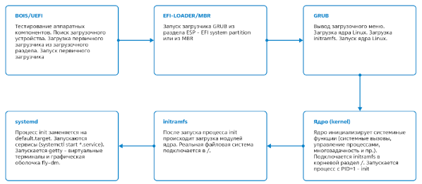
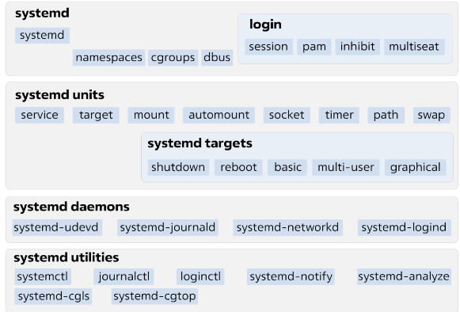

Порядок загрузки ОС
При подаче питания процессор начинает выполнять код BIOS (Basic Input/Output System, в устаревших системах), либо UEFI (Unified Extensible Firmware Interface, в современных системах), который производит инициализацию оборудования и помещает в оперативную память загрузчик. Далее загружается программа-загрузчик из записи MBR (Master Boot Record, для BIOS) либо с EFI-раздела (для UEFI) загрузочного устройства. В современных системах семейства Linux в роли загрузчика обычно выступает GRUB2 (GRand Unified Bootloader).
Astra Linux предоставляет надёжную платформу...
Чтобы отредактировать выбранный пункт меню, следует нажать клавишу e (в латинской раскладке), ввести имя администратора системы (учётная запись пользователя, созданная при установке ОС) и пароль, установленный на GRUB. Механизм редактирования схож с таковым в обычном текстовом редакторе. Внесённые изменения будут применены только один раз. Некоторые параметры загрузки указаны в разделе $ Дополнительные материалы$ . Для выполнения загрузки с указанными параметрами следует нажать клавишу F10. Вернуться к выбору пункта меню можно с помощью клавиши Esc. Внесённые изменения будут отменены. Загрузка ядра Ядро — набор подпрограмм, используемых: • для организации доступа к ресурсам компьютера; • обеспечения запуска и взаимодействия процессов; • проведения политики безопасности системы; • других действий, которые могут выполняться только в режиме полного доступа (в так называемом режиме супервизора). Все ядра находятся в самораспаковывающемся, сжатом формате для экономии места. Ядра расположены в каталоге /boot (например, vmlinuz-6.1.90-1-generic) вместе с исходным образом диска initramfs (например, initrd.img-6.1.90-1-generic) и списком разделов на жестких дисках (System.map-6.1.90-1-generic). Ядро Linux монолитное, драйверы устройств хранятся прямо в нём. Однако, большая часть периферийных устройств не имеет драйверов в ядре Linux. Вместо этого в оперативной памяти распаковывается ещё один файл во временной файловой системе — initrd.img. После того как выбранное ядро загружено в память и начинает исполняться, в первую очередь, оно должно извлечь само себя из сжатой версии файла. В процессе запуска ядра настраивается оборудование, запускается менеджер памяти, планировщик задач и многое другое, необходимое для функционирования операционной системы. Systemd
https://rutube.ru/video/private/39a65a1171900ccc7d82118c29af1045/?p=RUx2LIUzCcInnFP2Chf_ZwSystemd
Systemd — комплекс программ, экосистема которых формируется вокруг одноименной службы. Служба systemd — система инициализации, «корневой» родитель всех процессов пользовательского пространства. Управляет службами и целевыми состояниями. Использует агрессивное распараллеливание запуска служб, используя сокеты и системную шину dbus. Системная шина dbus позволяет приложениям обмениваться сообщениями. Systemd и ее службы предоставляют ряд инструментов для dbus. Целевое состояние ОС может включать в себя различные параметры, такие как настройка системных служб, драйверов устройств, обновление безопасности и другие факторы, которые влияют на стабильность и производительность системы. Целью является достижение и поддержание этого состояния для обеспечения надежной и беспроблемной работы операционной системы в долгосрочной перспективе.
 Перейти к загрузкеОсновные компоненты systemd:
- • systemd — основная служба, управляет процессами пользовательского пространства, в частности службами;
• юнит (unit) — основная единица systemd. Примерами юнитов являются службы, целевые состояния.
Основные службы systemd:
- • systemd-journald — служба регистрации событий, тесно интегрированная с systemd. Регистрирует сообщения системного журнала (syslog), ядра (kernel log), сообщения службы, выводимые в стандартные потоки вывода и ввода;
- • systemd-networkd — служба управления сетевыми соединениями. Обнаруживает и настраивает сетевые соединения;
- • systemd-logind — служба, управляющая входом пользователей в систему, пользовательскими сеансами, созданием текстовых терминалов при активации виртуальной консоли, обработкой клавиш сна/выключения и рядом других связанных возможностей;
- • systemd-udevd — служба управления событиями устройств. Служба прослушивает события, поступающие от ядра, и реагирует на них: в частности, создает/удаляет файлы устройств в каталоге /dev при подключении или отключении соответствующих устройств.
файлы — конфигурационные файлы для systemd.
Типы unit-файлов:
- • служба (.service);
- • целевое состояние (.target);
- • путь (.path);
- • таймер (.timer);
- • монтирование (.mount) и автомонтирование (.automount);
- • устройство (.device);
- • подкачка (.swap).